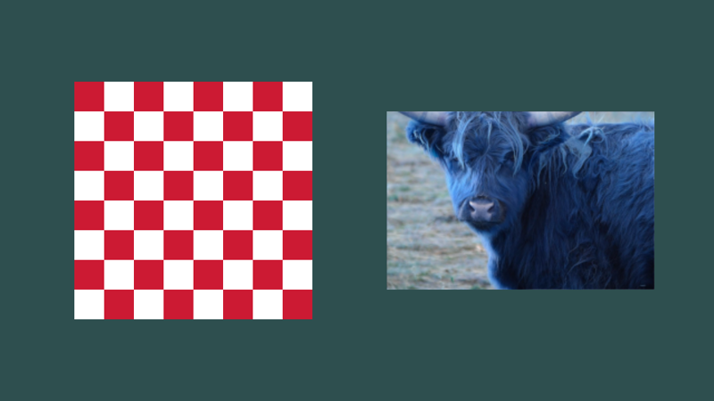
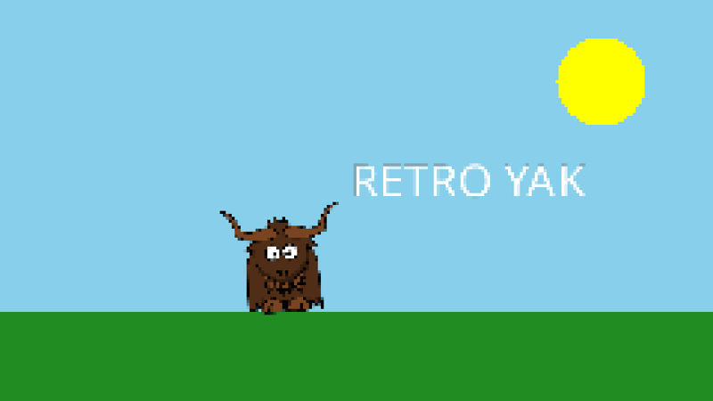

Surfaces: textures and render targets
A surface is an image stored on the GPU. There are two kinds:
| Texture | Render target | |
|---|---|---|
| Can be read (drawn as a sprite, used as an effect's input) | yes | yes |
| Can be rendered onto | no | yes |
| Has a depth buffer | no | yes |
| Made by | loading an image, or from pixel data | CreateRenderTarget() |
An IRenderTarget is also an ITexture, so anywhere a texture is expected you can pass a render target. That is what makes multi-step rendering possible: render something onto a render target, then use it as the input to the next step.
The window is a render target too. It is passed to Rendering() as windowRenderTarget, and can also be fetched with ReturnMainWindowRenderTarget(). (The window's render target cannot be read from, though, only rendered onto.)
Textures
Load textures from image files (see Assets) or from a Stream:
var texture = yak.Surfaces.LoadTexture("yak", AssetSourceEnum.Embedded);
using var stream = File.OpenRead("screenshot.png");
var fromStream = yak.Surfaces.LoadTexture(stream);
Textures from data
Textures can also be made from pixel data in code. CreateRgbaFromData() takes one Vector4 per pixel (red, green, blue, alpha, each 0 to 1), row by row from the top-left. LoadTextureColourData() loads an image's pixels into a TextureData without creating a texture, so you can inspect or change them first:

public override bool CreateResources(IServices yak)
{
_drawStage = yak.Stages.CreateDrawStage();
_camera = yak.Cameras.CreateCamera2D(960, 540);
// Build a texture from code: one Vector4 (R, G, B, A from 0 to 1) per pixel, row by row from the top-left
const int size = 8;
var pixels = new Vector4[size * size];
for (var y = 0; y < size; y++)
{
for (var x = 0; x < size; x++)
{
pixels[(y * size) + x] = (x + y) % 2 == 0 ? new Vector4(1.0f, 1.0f, 1.0f, 1.0f) : new Vector4(0.8f, 0.1f, 0.2f, 1.0f);
}
}
_checkerboard = yak.Surfaces.CreateRgbaFromData(size, size, pixels, SamplerType.Point);
// Or load an image's pixels, change them, and create a new texture from the result
var data = yak.Surfaces.LoadTextureColourData("yakphoto", AssetSourceEnum.Embedded);
var crop = new Vector4[240 * 160];
for (var y = 0; y < 160; y++)
{
for (var x = 0; x < 240; x++)
{
var p = data.Pixels[((y + 40) * (int)data.Width) + x + 120];
crop[(y * 240) + x] = new Vector4(p.Z, p.Y, p.X, p.W); // swap red and blue
}
}
_yakCorner = yak.Surfaces.CreateRgbaFromData(240, 160, crop);
return true;
}
CreateFloat32FromData() makes a single-channel texture of float values, which is what the distortion stage uses for height maps.
Texture size
GetSurfaceDimensions() returns a surface's width and height in pixels as a System.Drawing.Size. It is handy for drawing a sprite at its natural size, or keeping its aspect ratio.
Render targets
_scene = yak.Surfaces.CreateRenderTarget(960, 540);
CreateRenderTarget() takes a width and height in pixels, and optionally:
- autoClearColourAndDepthEachFrame (default
true): clears the render target to transparent black, and its depth buffer, at the start of every frame. Leave it on unless you want to keep what was drawn last frame (for trails, paint programs, or pre-rendered textures). - samplerType (default
Anisotropic): how the render target is filtered when it is later read and drawn at a different size.Pointgives crisp pixels. - numberOfMipMapLevels (default 1, meaning none).
Render into it with any stage, and read from it in a later step:
q.Draw(_drawStage, _camera, _scene); // render the scene off-screen
q.Blur(_blur, _scene, windowRenderTarget); // then use it as the input to an effect
Example: a retro, low-resolution look
Rendering into a small render target with point sampling, then copying it to the window, gives chunky pixels without changing any drawing code:

public override bool CreateResources(IServices yak)
{
_drawStage = yak.Stages.CreateDrawStage();
_yak = yak.Surfaces.LoadTexture("yak", AssetSourceEnum.Embedded);
// The camera still works in 960 x 540 units...
_camera = yak.Cameras.CreateCamera2D(960, 540);
// ...but everything is drawn into a surface only 240 x 135 pixels in size, sampled with
// Point filtering (no smoothing) when it is later stretched across the window
_lowRes = yak.Surfaces.CreateRenderTarget(240, 135, true, SamplerType.Point);
return true;
}
public override void Rendering(IRenderQueue q, IRenderTarget windowRenderTarget)
{
q.Draw(_drawStage, _camera, _lowRes); // draw into the small surface
q.Copy(_lowRes, windowRenderTarget); // stretch it over the window
}
Other uses
- Post-processing: render the scene into a render target, then pass it through effects on its way to the window.
- Pre-rendering: draw something expensive once into a render target (with auto-clear off) and then draw that as a simple textured quad every frame. The DrawingAndEffects_PrerenderingTexturesForUseLater sample pre-renders an animated explosion this way.
- Picture-in-picture: render a second view into a render target and draw it as a sprite.
- Textures for 3D: use a render target as the texture on a 3D mesh.
- Reading pixels back: render into a render target, then copy it to the CPU.
Clearing
q.ClearColour(target, colour) fills a render target with a colour; q.ClearDepth(target) resets its depth buffer. Render targets created with auto-clear on (and the window, if the configuration asks for it) are cleared automatically at the start of every frame, before your render queue runs.
Copying
q.Copy(source, target) copies any surface onto a render target, stretching it to fit. The sizes do not need to match.
Destroying surfaces
DestroySurface() destroys one texture or render target. DestroyAllUserTextures(), DestroyAllUserRenderTargets() and DestoryAllUserSurfaces() (note the spelling) destroy many at once. See Resources and references.
See also
- Samples: Surfaces_CreateTextureFromDataRGBA, Draw_ImageFileFormats, Copy_Example
- Full example code: Surfaces.cs